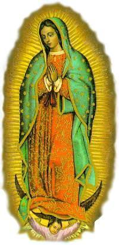

É
comum lermos nos jornais, ouvirmos no noticiário da TV ou no
rádio, que centenas de pessoas morrem diariamente de fome na
África, na Ásia, na América Central, no interior do Brasil e
em diversos outros lugares.
É
comum lermos nos jornais, ouvirmos no noticiário da TV ou no
rádio, que centenas de pessoas morrem diariamente de fome na
África, na Ásia, na América Central, no interior do Brasil e
em diversos outros lugares.SABER ENTENDER A VONTADE DE DEUS
É
comum lermos nos jornais, ouvirmos no noticiário da TV ou no
rádio, que centenas de pessoas morrem diariamente de fome na
África, na Ásia, na América Central, no interior do Brasil e
em diversos outros lugares.
Pergunto: Diante de DEUS, quem pagará por esses crimes"
Nós somos responsáveis. Todos nós, os bons e os maus, porque pela Lei Divina do Amor, também devemos zelar pelo bem-estar da humanidade. Sim, porque somos todos irmãos em CRISTO, filhos do mesmo e maravilhoso PAI ETERNO.
Habitamos uma civilização cuja
maioria vive egoisticamente, sem DEUS. Os cristãos que deveriam dar
o exemplo, esforçando-se para ser diferente, uma porcentagem elevada

DEUS está preocupado com o comportamento
da humanidade. Um testemunho desta afirmação encontramos na quantidade
notável de Manifestações Sobrenaturais que ocorreram de 1960 a 1990. O
SENHOR intensificou de maneira admirável a vinda de emissários celestes
para ensinar ao povo e revelar a Última Vontade do CRIADOR.
Em quase todas as partes do mundo aconteceram Aparições ou alguma
ocorrência sobrenatural, que caraterizava a intervenção Divina, com
o objetivo de sacudir as pessoas, acordar aquelas que permaneciam imersas
no pecado, despertando-as do marasmo da indiferença e do comodismo, para
as coisas de DEUS. O CRIADOR, excedendo de modo visível e generoso,
permitiu que acontecesse milagres extraordinários, deixando homens,
mulheres, leigos e religiosos, pasmados e impressionados com o zelo Divino
em provar o Amor de DEUS e a Verdade Cristã.
E tudo isto, porque DEUS ama a humanidade. ELE é o nosso PAI e nós somos os seus filhos, as suas sementes germinadas no solo rico e sagrado do Coração Divino.
Atualmente ainda vivemos num tempo de
graças, época em que DEUS acolhe com muito mais paciência, as súplicas
e solicitações de cada um, pela maternal intercessão de NOSSA SENHORA ,
ou pelo auxílio de um Santo da Devoção de cada fiel, perdoando misericordiosamente
as muitas faltas e transgressões da humanidade por meio da Confissão Sacramental,
enchendo a nossa vida de força e inspiração pelo Sacramento da Eucaristia, fazendo
crescer a fé e derramando paz em nosso espírito através da Oração.
Ouvimos em certa ocasião algumas pessoas que lamentavam e questionavam o comportamento de DEUS, dizendo: "Com tantas desgraças e misérias acontecendo em todas as partes, porque o CRIADOR não muda a situação do mundo?"
A resposta está aqui mesmo, não precisamos ir
muitão longe, porque ela está ao nosso redor... Olhe e medite. O SENHOR quer mudar
o mundo, mas a humanidade não quer. A grande maioria das pessoas
prefere passear e "aproveitar" os momentos disponíveis, quando não estão trabalhando. Ninguém se preocupa
em participar de uma Santa Missa aos domingos, assim como a grande maioria das
pessoas não rezam e não querem saber de Orações.
JESUS realizou plenamente a Obra Redentora e nos deixou meios eficazes para a
Salvação de todos. Ela começa pela conversão do coração, que conduz o fiel ao exercício
da Oração, a prática do Jejum e outras Penitências, a cultivar a Caridade e a uma
"Entrega Total" a DEUS,
como passos eficazes e decisivos, para conseguir o perdão Divino pelos muitos pecados
cometidos e alcançar a amizade do SENHOR, fundamental para a felicidade nesta vida
e ganhar a eternidade. Todavia, a maior parte dos cristãos não seguem este caminho
e não levam esta realidade a sério, são totalmente indiferentes.
Em outras palavras, as pessoas não se
preocupam em compreender a Vontade de DEUS, estão concentradas em fazer
funcionar os seus esquemas para alcançar os seus objetivos e interesses. Quando
surge um grave problema, querem resolve-lo a qualquer custo, utilizando todos
os artifícios possíveis, os honestos e também aqueles não recomendáveis.
Até que malogradas todas as tentativas, quando a solução parece impossível,
aí então, eles se lembram do CRIADOR e se movimentam, apelando para
a misericórdia Divina.
Verdadeiramente este não é o caminho
indicado! É um retrato maiúsculo da ingratidão. A humanidade não entende e não
se preocupa em agradecer o "dom da
vida" que recebeu graciosamente do CRIADOR.
Seria tão bonito se as pessoas procurassem cultivar com seriedade uma sincera
amizade com o SENHOR, mostrando-LHE com carinho e ternura, a grandeza
do amor filial e o valor da amizade de cada um. Porque este procedimento é que
vai propiciar a certeza da "resposta
Divina", infundindo a convicção e a alegria no coração
dos fieis, revelando que realmente ELE caminha junto de nós. E assim, quando
ocorrer um grave problema ou uma dificuldade insuperável, não devemos desesperar
e nem enveredar por caminhos imaginários numa febril busca de solução para
contornar a dificuldade. Devemos sim, desde o início, colocá-la confiantemente
nas mãos de DEUS, suplicando a ajuda Divina, com a convicção que de fato ela
virá. E sem dúvida, a Luz do CRIADOR brilhará e derramará na mente do fiel
a solução almejada, como resposta ao amor e ao abandono que ele demonstrou
ao longo do tempo, proporcionando a extinção do problema. Isto acontecerá, por
mais complicada e difícil que seja a situação, porque pela Vontade do SENHOR,
a dificuldade desaparecerá, sendo ela completamente solucionada.
O fiel que reza e crê na providência
Divina, deve enfrentar corajosamente os problemas do cotidiano com confiança
e disposição, sem esmorecimento e com plena certeza de que o CRIADOR jamais
esquecerá dele. Em todas ocasiões o SENHOR nunca esquece de nenhum de
seus filhos que buscam a sua generosa e paternal proteção. Aàs vezes, através
dos acontecimentos de cada dia, o SENHOR poderá permitir que sejamos testados
em alguma provação, como um modo paterno de nos corrigir e de nos
conduzir a uma purificação mais completa, objetivando o nosso próprio bem
espiritual. Mas jamais ELE abandonará um daqueles que LHE ama e que LHE
são fiéis.
Sintetizando, podemos afirmar que nossa oração será mais completa, a partir do momento em que pudermos oferecer tudo de nós à DEUS, não separando nada, entregando-lhe todos os nossos bens, o trabalho, o lazer e até a nossa própria vida. Oferecer tudo ao CRIADOR, a fim de que ELE, através de nossa oferta e das nossas orações, realize o Seu programa de Salvação da Humanidade inteira, inclusive a salvação de nossa Vida.